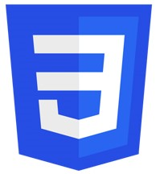
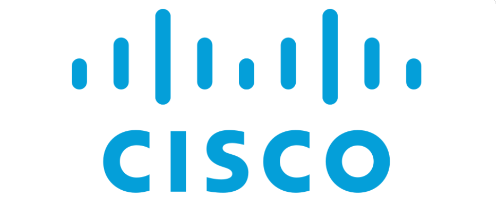

Contact
Naiss. 25/12/1993
Tel. +33 6 52 31 13 81
E. vanny.lamorte@laplateforme.io
Mon objectif professionnel
Actuellement étudiante en première année de Bachelor IT, à l'école La Plateforme, je souhaite me spécialiser dans le développementt Web.
Ayant un Master en Arts Plastiques, je suis intéressée par toutes créations visuelles et j'ai appris à travailler avec rigueur pour valider mon Mémoire avec mention Très bien.
Par ailleurs, j'ai travaillé de nombreuses année en Angleterre où j'ai pu découvrir l'univers de l'informatique (former les nouveaux employés à tous les logiciels utilisés, aider à fixer les bugs informatiques, faire la liaison entre les employés et l'équipe de support informatique, commander et faire réparer le matériel informatique etc.) .
Je souhaiterais me réorienter en informatique afin de développer mes compétences et en faire mon métier.
Expériences Professionnelles
2019 - 2023
Beaver Bridges Limited - Angleterre
Admin Marketing / Réceptionniste
Assiste différents départements sur diverses tâches administratives notamment auprès des
chefs de projets, l’équipe de vente, le responsable des Ressources Humaines et le responsable
de la Santé et de la Sécurité. Met à jour le site web. Accueille physiquement ou par téléphone
les clients et les visiteurs. Gère les stocks et les commandes de fournitures, les vêtements
corporatifs et les matériaux informatiques.
2017 - 2019
Brooklyn Craft Limited & Spuds N Dawgs - Angleterre
Restaurant Manager
Supervise toutes les activités en salle et en cuisine de deux restaurants : Assure le suivi budgétaire.
Embauche et forme le personnel. Contrôle le niveau des stocks et enclenche les commandes.
Vérifie que les normes sanitaires, d'hygiène et de sécurité soient respectées.
Assure un excellent service clientèle et gère les retours et réclamations des clients.
Formation
2023 - Présent
Ecole La Plateforme - France
Bachelor IT
2012 - 2017
Université Aix-Marseille - France
Master en Arts Plastiques
Mes compétences
 HTML
HTML- CSS
- Linux
 Bash
Bash- Cisco